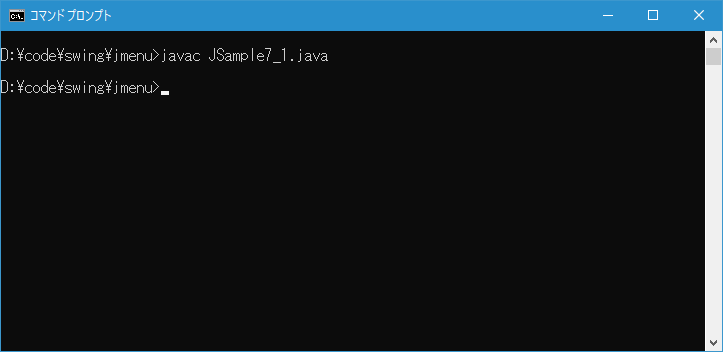
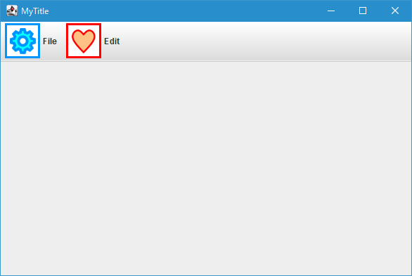
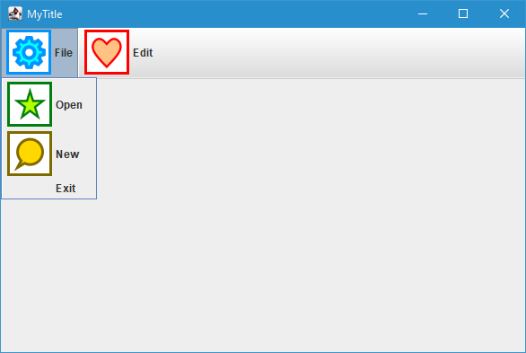

メニューおよびメニューアイテムに画像を表示する
メニューおよびメニューアイテムには文字列だけではなく画像を表示することもできます。ここではメニューおよびメニューアイテムに画像を表示する方法について解説します。
メニューおよびメニューアイテムに画像を表示する
メニューにはコンストラクタで画像を設定するものは用意されていませんが、メニューアイテムの JMenuItem クラスには画像を設定するコンストラクタが用意されています。
public JMenuItem?(Icon icon)
指定されたアイコンでJMenuItemを作成します。
パラメータ:
icon - JMenuItemのアイコン
引数には表示したい画像を表す Icon インターフェースを実装したクラスのオブジェクトを指定します。 Java では Icon インターフェースを実装したクラスとして ImageIcon クラスが用意されており、今回は ImageIcon クラスのオブジェクトを指定してみます。( ImageIcon クラスについては「ImageIconクラス」を参照して下さい)。
実際の使い方は次のようになります。
ImageIcon icon = new ImageIcon("./img/sample.png");
JMenuItem? menuitem = new JMenuItem?(icon);
またメニューアイテムには画像と文字列を両方設定するコンストラクタも用意されています。
public JMenuItem?(String text,
Icon icon)
指定されたテキストおよびアイコンでJMenuItemを作成します。
パラメータ:
text - JMenuItemのテキスト
icon - JMenuItemのアイコン
1 番目の引数にはメニューアイテムに表示する文字列、 2 番目の引数には先ほどのコンストラクタの場合と同じく Icon インターフェースを実装したクラスのオブジェクトを指定します。
実際の使い方は次のようになります。
ImageIcon icon = new ImageIcon("./img/sample.png");
JMenuItem? menuitem = new JMenuItem?("Open", icon);
PNG 形式の画像から ImageIcon クラスのオブジェクトを作成し、メニューアイテムのコンストラクタの引数に指定しています。
-- --
メニューにはコンストラクタで画像を設定するものは用意されていませんのでメニューを作成したあとで画像を設定します。メニューに画像を設定するには JMenu クラスの親クラスである AbstractButton クラスで定義されている setIcon メソッドを使います。このメソッドはメニューアイテムでも使用できます。
public void setIcon?(Icon defaultIcon)
ボタンのデフォルトのアイコンを設定します。 明示的な指定がない場合、このアイコンはボタンが「押された」状態、および「無効な」状態を示すアイコンにも使用されます。
パラメータ:
defaultIcon - デフォルト状態の表示に使用されるアイコン
引数にはメニューアイテムのコンストラクタの場合と同じく Icon インターフェースを実装したクラスのオブジェクトを指定します。
メニューやメニューアイテムに画像だけを設定する場合、実際の使い方は次のようになります。
ImageIcon icon1 = new ImageIcon("./img/sample1.png");
ImageIcon icon2 = new ImageIcon("./img/sample2.png");
JMenu menu = new JMenu();
menu.setIcon(icon1);
JMenuItem? menuitem = new JMenuItem?();
menuitem.setIcon(icon2);
画像だけではなく文字列と画像を両方表示する場合の実際の使い方は次のようになります。
ImageIcon icon1 = new ImageIcon("./img/sample1.png");
ImageIcon icon2 = new ImageIcon("./img/sample2.png");
JMenu menu = new JMenu("File");
menu.setIcon(icon1);
JMenuItem? menuitem = new JMenuItem?("Open");
menuitem.setIcon(icon2);
サンプルプログラム
それでは簡単なサンプルプログラムを作って試してみます。テキストエディタで次のように記述したあと、 JSample7_1.java という名前で保存します。
import javax.swing.JFrame;
import javax.swing.JMenuBar;
import javax.swing.JMenu;
import javax.swing.JMenuItem;
import javax.swing.ImageIcon;
class JSample7_1 extends JFrame{
public static void main(String args[]){
JSample7_1 frame = new JSample7_1("MyTitle");
frame.setVisible(true);
}
JSample7_1(String title){
setTitle(title);
setBounds(100, 100, 600, 400);
setDefaultCloseOperation(JFrame.EXIT_ON_CLOSE);
ImageIcon icon1 = new ImageIcon("./icon01.png");
ImageIcon icon2 = new ImageIcon("./icon02.png");
ImageIcon icon3 = new ImageIcon("./icon03.png");
ImageIcon icon4 = new ImageIcon("./icon04.png");
JMenuBar menubar = new JMenuBar();
JMenu menu1 = new JMenu("File");
menu1.setIcon(icon1);
JMenu menu2 = new JMenu("Edit");
menu2.setIcon(icon2);
JMenuItem menuitem1_1 = new JMenuItem("Open", icon3);
JMenuItem menuitem1_2 = new JMenuItem("New");
menuitem1_2.setIcon(icon4);
JMenuItem menuitem1_3 = new JMenuItem("Exit");
menu1.add(menuitem1_1);
menu1.add(menuitem1_2);
menu1.add(menuitem1_3);
menubar.add(menu1);
menubar.add(menu2);
setJMenuBar(menubar);
}
}
次のようにコンパイルを行います。
javac JSample7_1.java

コンパイルが終わりましたら実行します。
java JSample7_1
メニューを作成しました。メニューバーには 2 つのメニューが追加されています。それぞれのメニューには画像と文字列が設定されています。

最初のメニューには 3 つのメニューアイテムが追加されています。 1 番目と 2 番目のメニューアイテムには画像と文字列が設定されており、 3 番目のメニューアイテムには文字列だけが設定されています。

-- --
メニューおよびメニューアイテムに画像を表示する方法について解説します。
( Written by Tatsuo Ikura )

著者 / TATSUO IKURA
初心者～中級者の方を対象としたプログラミング方法や開発環境の構築の解説を行うサイトの運営を行っています。